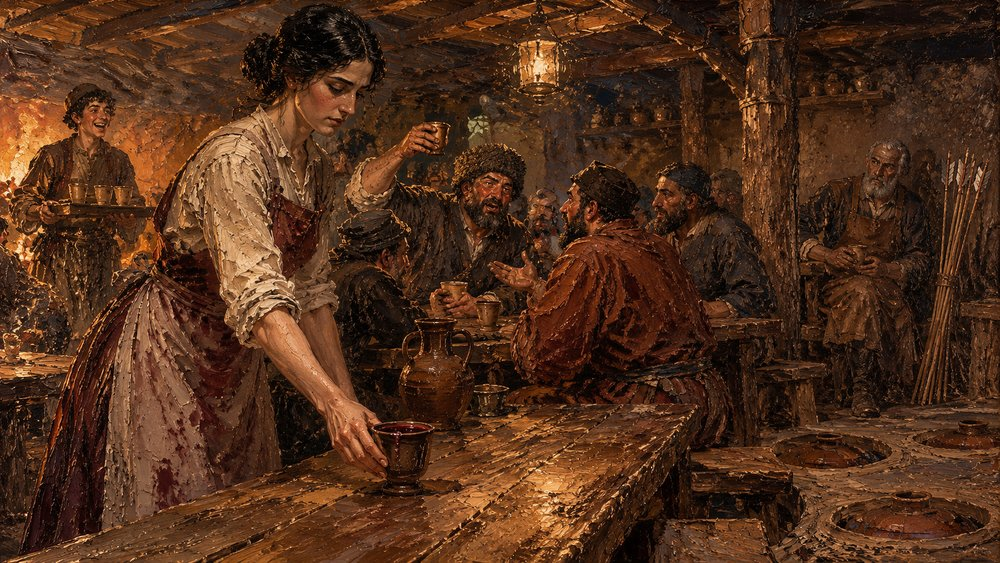

Record 4 of 14
The Unclaimed Cup
At the hour of the evening lamp in the Fourth Cup, the wine-house at the bottom of the Wine Gate road, Medea fills a cup to the brim and sets it on the empty end of the long table, as the custom requires, for whoever has not yet come. In the corner farthest from the fire sits the old fletcher who sells plain arrows at the Wine Gate, nursing one cup of watered wine: Observer 506, whom the carters know as Besarion.
In a low timbered wine cellar lit by a hanging lantern and a fire, a dark-haired woman in a white blouse and a wine-stained apron bends over a long wooden table and sets down a full cup; carters in fur hats and coats talk and drink at the far end, a young man at the left carries a tray of cups and laughs, an old grey-bearded man in an apron sits apart in the corner with a bundle of arrows leaning against the wall beside him, and buried clay jars sit in the floor at the right.